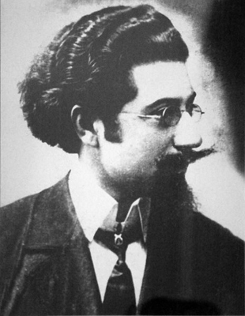

Արմեն Տիգրանյան
(1879-1950)
 Հայ երաժշտության ականավոր ներկայացուցիչ Արմեն Տիգրանյանը պատկանում է արվեստագետների այն սերնդին, որը կամուրջի դեր խաղաց ազգային երաժշտական մշակույթի երկու տարբեր շրջանների միջև: Որպես ձևավորված և իր ուրույն ոճն ունեցող կոմպոզիտոր,հանդես գալով դեռևս խորհրդային կարգերի հաստատումից առաջ, նա ստեղծագործական և երաժշտական-հասարակական արգասավոր գործունեություն ծավալեց խորհրդային շրջանում: Կոմպոզիտորի ստեղծագործական ուղու առաջին տարիներն ընթացան հայ երաժշտության պատմության չափազանց կարևոր ժամանակաշրջանում, երբ պրոֆեսիոնալ երաժշտության մեջ սկսվել էր եվրոպական երաժշտության յուրացման ու ազգային ոճի ձևավորման բարդ, դժվարին գործնթացը: Կոմպոզիտորը դիմեց օպերային ժանրին և այդ բնագավառում մեծ արդյունքի հասավ: Նրա «Անուշը» աոաջին լիարժեք ազգային, ռեալիստական օպերան դարձավ:
Ա. Տիգրանյանի երաժշտության հիմքը ժողովրդական երաժշտութունն է՝ իր տարբեր ճյուղավորումներով (գեղջկական, քաղաքային, աշուղական), ինչպես նաև հարուստ հոգևոր երաժշտությունը: Կոմպոզիտորի ինքնատիպ ոճը անհատականի և ժողովրդականի ներդաշնակ միաձուլման արգասիք է: Նա իր ստեղծագործություններում գեղարվեստական ճշմարտացիությամբ ու բանաստեղծորեն պատկերեց հայ ժողովրդի կյանքը, կենցաղը, սովորույթները, նրա հերոսական անցյալը, հայրենի բնությունը: Բայց կոմպոզիտորի հիմնական թեման մարդն Է՝ իր հարուստ հոգեկան աշխարհով:
Ա. Տիգրանյանի երաժշտությունն իր բնույթով քնարական Է: Կոմպոզիտորը պատկերում Է քնարական տրամադրություններով և հույզերով համակված կյանքի երևույթները: Նրա երկերին հատուկ են լայն շնչի մեղեդայնությունը, արտահայտած տրամադրությունների անմիջականությունն ու մեծ հուզականությունը Ա. Տիգրանյանը եղել Է նաև մանկավարժ, խմբավար, հասարակական գործիչ՝ այս բնագավառներում նույնպես մեծ ծառայություններ մատուցելով ազգային մշակույթի զարգացմանը: Նա իրեն դրսևորեց որպես առաջադեմ արվեստագետ և իր բեղմնավոր գործունեությունն ի սպաս դրեց ժողովրդին:
Արմեն Տիգրանյանը ծնվել Է 1879 թ. դեկտեմբերի 14-ին (26-ին) Ալեքսանդրապոլում (այժմ՝ Գյումրի), ժամագործի ընտանիքում: Նրա երաժշտական հակումները երևան են եկել վաղ հասակից, ինչին նպաստել են քաղաքի երաժշտական հարուստ կենցաղն ու ընտանեկան միջավայրը: Ծնողները մեծ ուշադրություն Էին հատկացնում գրականությանն ու արվեստին, հաճախ իրենց տանը կազմակերպում գրական-երաժշտական երեկոներ:
Ա. Տիգրանյանն երաժշտությանը սերտորեն առնչվեց դպրոցում: Ֆլեյտա Էր նվագում փողային նվագախմբում:
1894-ին Ա.Տիգրանյանի ընտանիքը տեղափոխվում Է Թիֆլիս: Այստեղ իր գիտելիքները լրացնելու և, հատկապես, հայ երաժշտության մեջ խորանալու նպատակով նա որոշ ժամանակ սովորում Է Մ.Եկմալյանի մոտ:
Երաժշտական ուսումնարանն ավարտելուց հետո (1902 թ.) Ա.Տիգրանյանը վերադառնում Է Ալեքսանդրապոլ և մանկավարժական ու երաժշտական-հասարակական գործունեության լծվում՝ դպրոցներում երգեցողության դասեր վարում, սիրողներից երգչախմբեր կազմակերպում և համերգներ տալիս Ալեքսանդրապոլում ու Անդրկովկասի այլ քաղաքներում, հոդվածներ ու գրախոսականներ գրում՝ նվիրված արվեստի հարցերին («Ախուրյան» թերթում): Բացի այդ, նա սկսում Է ժողովրդական երգեր հավաքել, մշակելու տարածել: Որոշ ժամանակ անց հանդես Է գափս նաև ինքնուրույն գործերով՝ երգերով, ռոմանսներով, որոնք, սակայն ժողովրդական երաժշտության ոճական ոլորտից դուրս չեն գալիս: Դրանցից մեծ տարածում են ստանում Ավ. Իսահակյանի բանաստեղծություններով գրված «Հովերն առան սար ու դարդեր», «Ախ, իմ ճամփեն», «Սև աչերեն շատ վախեցիր» և այլ երգեր:
Թիֆլիսում եղած տարիներին Ա. Տիգրանյանը, գերված Վերդիի ու Չայկովսկու օպերաներով, երազել Է հայկական օպերա գրել:
Սակայն կոմպոզիտորն իր վաղեմի իղձը կարողանում Է իրագործել միայն 1908 թվականին: Հ. Թումանյանի «Անուշ» պոեմով ոգեշնչված՝ նա սկսում Է գրել համանուն օպերան: Այդ մասին կոմպոզիտորը գրում Է. «Հայկական օպերա գրելու միտքը վաղուց զբաղեցրել Էր ինձ, բայց բոլոր սյուժեները, որոնց մշակմանը ես ուզում Էի դիմել, ինձ չէին ոգևորում հարկ եղածի պես: Հ. Թումանյանի «Անուշի» թեման ինձ ամբողջապես հափշտակեց»:
Հայկական օպերային թատրոնի բացակայության պայմաններում հեղինակն իր օպերան բեմադրելու համար հույս պետք է դներ միայն սիրողների ուժերի վրա, ուստի երաժշտությունը պետք է լիներ մատչեք անհրաժեշտ երաժշտական պատրաստություն չունեցող երգիչների համար: «Անուշն» առաջին անգամ բեմադրվեց 1912 թ. օգոստոսի 4-ին (27-ին): Այդ բեմադրության մասին Ա. Շահվերդյանը գրում է. «1912 թ. Ալեքսանդրապոլում «Անուշ» օպերան առաջին անգամ բեմադրվեց Ա.Տիգրանյանի ստեղծած և սովորեցրած սիրողների խմբակի ուժերով: Հիրավի, դասական օպերան ծնվեց ցնցոտիների մեջ: Բավական է ասել, որ նվագախումբը կազմված էր միայն 12 երաժիշտներից: Կատարողները (թե երգչախումբը, թե մենակատարները) գերազանցապես դպրոցականներ էին, որոնք երգում էին անկեղծ ոգևորությամբ և ջանասիրությամբ, բայց զուրկ էին անհրաժեշտ փորձառությունից ու մասնագիտական վարպետությունից: Շենքի անհարմարություն, միջոցների ծայրահեղ սահմանափակություն, հագուստների և դեկորների աղքատություն - ահա այսպիսի պայմաններում իրագործվեց «Անուշի» աոաջին բեմադրությունը: Եվ, այնուամենայնիվ, ներկայացումն ունեցավ անօրինակ հաջողություն: Հասարակությունը ցրվելով իր հետ տանում էր հիշողության մեջ տպավորված և սիրված մեղեդիներ, որոնք ասես միաձուլվել էին Թումանյանի հերոսների կերպարներին: Հայ մշակութային կյանքում որպես աչքի ընկնող իրադարձություն ճանաչված այդ նոր ստեղծագործության համբավը տարածվեց Ալեքսանդրապոլի սահամաններից դուրս»: Հետագայում օպերան կատարվեց Անդրկովկասի այլ քաղաքներում և ամենուրեք մեծ հաջողությամբ:
1913 թ. Ա.Տիգրանյանը կրկին տեղափոխվում է Թիֆլիս ու մնում է մինչև կյանքի վերջը: Այստեղ, բացի ստեղծագործելուց, հանդես է գալիս քննադատական հոդվածներով հայ մամուլի էջերում, ակտիվ մասնակցում է «Հայոց երաժշտական ընկերության» աշխատանքներին, դասավանդում դպրոցում: Նա բարեկամական կապեր է հաստատում հայ արվեստագետների՝ Հ. Թումանյանի, Ա. Շիրվանզադեի, Գ. Բաշինջաղյանի, Ե. Թադևոսյանի, Վ. Տերյանի, Դ. Դեմիրճյանի և ուրիշների հետ:
Անդրկովկասում խորհրդային կարգեր հաստատվելուց հետո Ա. Տիգրանյանը լծվում է նոր երաժշաական կյանքի կազմակերպման գործին: Ունենալով երկարամյա մանկավարժական փորձ՝ նա ակտիվորեն մասնակցում է դպրոցներում երաժշտության դասավանդման վերակառուցմանը, իսկ երբ Թիֆլիսում հիմնադրվում է Հայ արվեստի տունը (Հայարտուն), նա երաժշտական սեկցիայի կազմակերպիչներից և անխոնջ աշխատակիցներից մեկն է դառնում: Հետագայում Ա. Տիգրանյանը մեծ հետաքրքրություն է ցուցաբերում նաև Հայաստանի և Վրաստանի կոմպոզիտորների միությունների աշխատանքներին:
20-30 թվականներին երաժշտական ժանրերից մեծ նշանակություն է ստանում երգը, առանձնապես մասսայական երգը: ժամանակի թելադրանքով Ա. Տիգրանյանը գրում է երգեր, որոնք մեծ տարածում են ստանում: Բացի այդ, նա գրում է դաշնամուրային պիեսներ, Հայաստանին նվիրված կանտատ, «Պարային սյուիտը», երաժշտություն մի շարք թատերական ներկայացումների համար՝ «Խավարի ճիրաններում»՝ Տ.Հախումյանի, ըստ Պ. Պռոշյանի, «Արշալույսին»՝ Ա. Գուլակյանի և այլն): 30-ական թվականները կոմպոզիտորը հիմնականում հատկացրեց «Անուշ» օպերայի մշակմանը՝ Երևանի օպերայի և բալետի պետական թատրոնում բեմադրելու համար (193Տ թ. մարտի 27-ին), ապա և Մոսկվայում կայանայիք հայկական արվեստի տասնօրյակի կապակցությամբ (1939) : Թե Երևանում և թե Մոսկվայում օպերան ունեցավ շատ մեծ հաջողություն (Հայկանուշ Դանիելյանի և Շարա Տալյանի փայլուն կատարումներով): Վ. Նեմիրովի-Դանչենկոն գրում է. «Օպերայի երաժշտությունը ուժեղ է, հոյակապ: Ազգային երաժշտության հատիկը շատ հարուստ է արտացոլված օպերայում, և, միևնույն ժամանակ, լավ է օգտագործված եվրոպական երաժշտական ու վոկալ արվեստը: Ցմահ չեմ մոռանա «Անուշի» հմայքը»:
Հայրենական պատերազմի տարիներին Ա. Տիգրանյանը գրում է մի շարք մասսայական երգեր, խմբերգեր, «Երթային քայլերգը» սիմֆոնիկ նվագախմբի համար, բայց հիմնական գործը, որին նվիրվում է հոգու ողջ կորովով», «Դավիթ-Բեկ» օպերան էր:
Օպերան մտահղացել է 30-ական թվականներին, բայց այն ստեղծելու ուղղությամբ կոմպոզիտորը լրջորեն սկսում է աշխատեւ 40-ական թվականների սկզբից՝ պատերազմի տարիներին: Րաֆֆու վեպում արտահայտված հայրենասիրությունը և գլխավոր հերոսի վեհ կերպարը, նրա անձնուրաց սերն իր ժողովրդի և հայրենիքի նկատմամբ, ատելությունը դեպի նենգ զավթիչները համահունչ էին ժամանակաշրջանի ոգուն և կոմպոզիտորի տրամադրություններին:
Ա. Տիգրանյանը վախճանվեց 1950 թ. փետրվարի 10-ին, Թբիլիսիում: «Դավիթ-Բեկ» օպերայի երաժշտությունը գրված էր, բայց գործիքավորումը չէր ավարտված: Կոմպոզիտորի մահից հետո օպերան խմբագրեց դիրիժոր Գ. Բուդաղյանը, իսկ գործիքավորումն իրականացրեց Լ. Խոջա-Էյնաթյանը: Օպերան բեմադրվեց 1950 թ. նոյեմբերին՝ արժանանալով հասարակության ամենաջերմ վերաբերմունքին: